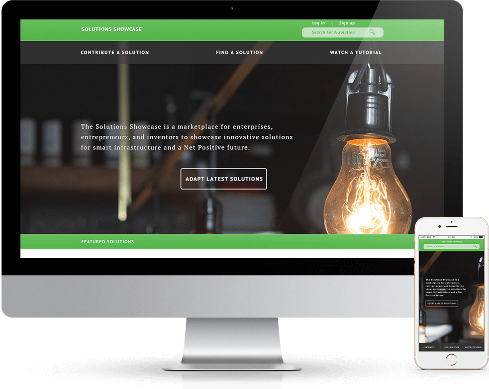

Solutions Showcase (2014)
The Solutions Showcase is a platform for companies to share sustainable ideas with other companies to reduce our carbon footprint and the use of non-renewable resources. The task was to design a web interface allowing users to browse through thousands of submitted solutions and adapt the ones that fit their requirement. The product also incorporated a platform for companies to upload their own solutions. Since there was a lot of information to be presented, I created a well-balanced architecture providing users with what they need, when they need it. The final experince was simple, fast, adaptive and intuitive.
